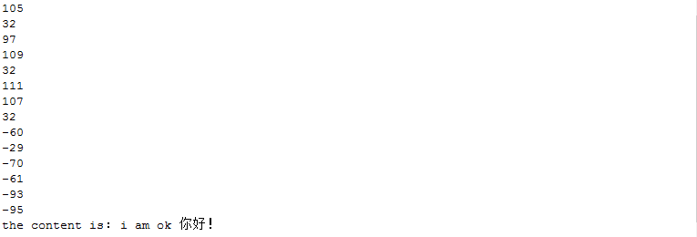
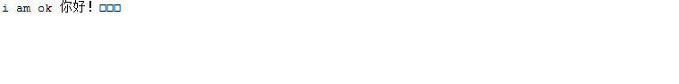
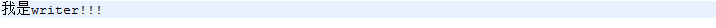
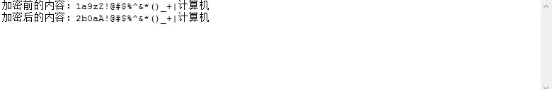

字符流
我们先来看看常说的字符与字节的的定义：
（一）“字节”的定义
字节（Byte）是一种计量单位，表示数据量多少，它是计算机信息技术用于计量存储容量的一种计量单位。
1个字节等于8位二进制，它是一个8位的二进制数，是一个很具体的存储空间。
（二）“字符”的定义
字符是指计算机中使用的文字和符号，比如1、2、3、A、B、C、~！·#￥%……—*（）——+、等等
前面讲的都是InputStream，这是操作字节流的类，然而我们在程序中往往要从文件等stream中读取字符信息，如果只用InputStream能否读取字符信息呢？当然可以。但是这涉及到了一个编码和解码的问题，传输双方必须才用同一种编码方式才能正确接收，这就导致每次在传输时，传输方需要做这么几件事：
1）将需要传输的字符编码成指定字节
2）传输字节
接收方需要做这么几件事：
1）接收字节
2）将字节解码成对应的字符1
2
3
4
5
6
7
8
9
10
11
12
13
14
15
16
17
18
19public static void main(String[] args) {
File file = new File("F:/winner_info/Learnhow2j/JavaSystem/src/TestFileStream/textStream.txt");
//把流定义在try()里,try,catch或者finally结束的时候，会自动关闭
try(FileInputStream fis = new FileInputStream(file)){
//创建字节数组，其长度就是文件的长度
byte[] all = new byte[(int) file.length()];
int length = fis.read(all);
for (byte b : all){
System.out.println(b);
}
// 将字节数组中指定位置的字节转码成对应的字符串
String content = new String(all, 0, length, Charset.forName("GBK"));
System.out.println("the content is " + content);
}catch(IOException e){
e.printStackTrace();
}
}

可以看到文本内容：i am ok 你好！
输出结果：the content is： i am ok 你好！
从上面的例子中，我们看到只有InputStream就能解决传输字符串的问题了，但是每次都要先读成byte字节，再进行转码，麻烦，能不能直接传字符呢？？？？？
Reader字符输入流
Writer字符输出流
专门用于字符的形式读取和写入数据
使用字符流读取文件
1 | public static void main(String[] args) { |
输出结果：

使用字符流把字符串写入到文件
1 | public static void main(String[] args) { |
文件内容：

文件加密练习
准备一个文本文件(非二进制)，其中包含ASCII码的字符和中文字符。
设计一个方法
public static void encodeFile(File encodingFile, File encodedFile);
在这个方法中把encodingFile的内容进行加密，然后保存到encodedFile文件中。
加密算法：
数字：
如果不是9的数字，在原来的基础上加1，比如5变成6, 3变成4
如果是9的数字，变成0
字母字符：
如果是非z字符，向右移动一个，比如d变成e, G变成H
如果是z，z->a, Z-A。
字符需要保留大小写
非字母字符 ，比如’,&^ 保留不变，中文也保留不变
1 | public class TextencodeFile { |
输出结果：

代码未出现报错，但无法把字符流写入到文件中的情况
字节流在操作文件时，即使不关闭资源（close方法），文件也能输出，但是如果字符流不使用close方法的话，则不会输出任何内容，说明字符流用的是缓冲区，并且可以使用flush方法强制进行刷新缓冲区，这时才能在不close的情况下输出内容在获取文本中的内容时，如果出现中文的话，文件的长度会变成中文的两倍。就是如果txt文件中有“中国”两个字，在file.length() 中会变成4，因此本身的字符串数据就变成4个了。在控制台输出的时候，就会有小正方形。
char[] all = new char[(int) f.length()]; 这句查了一下length()返回的是文件的长度（多少个字节），这里是char数组，char占两个字节 相当于2个byte了吧，所以应该大小设置一半（或者一半+1） 就行了吧？
如果这个文件里的内容都是数字，则文件的长度与char数组的长度是相等的字节流和字符流使用是非常相似的，那么除了操作代码的不同之外，还有哪些不同呢？
字节流在操作的时候本身是不会用到缓冲区（内存）的，是与文件本身直接操作的，而字符流在操作的时候是使用到缓冲区的那开发中究竟用字节流好还是用字符流好呢？
在所有的硬盘上保存文件或进行传输的时候都是以字节的方法进行的，包括图片也是按字节完成，而字符是只有在内存中才会形成的，所以使用字节的操作是最多的。如果要java程序实现一个拷贝功能，应该选用字节流进行操作（可能拷贝的是图片），并且采用边读边写的方式（节省内存）。